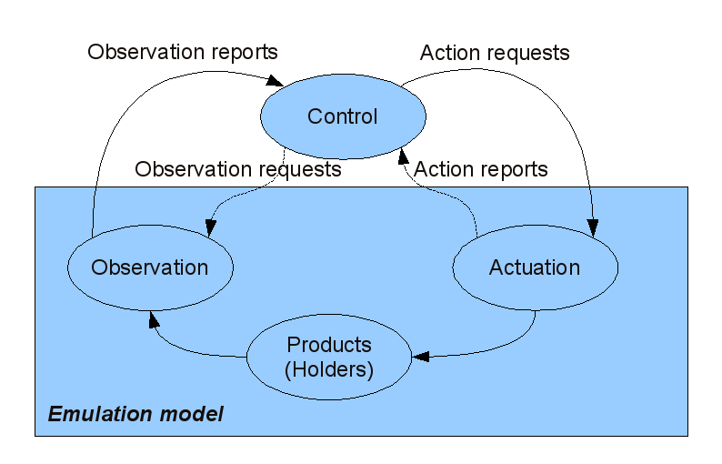
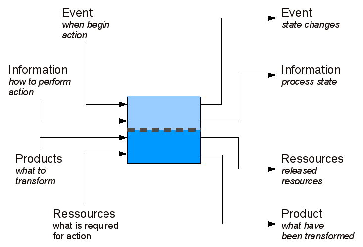

Concepts¶
This section aims at presenting the concept upon which the modelling approach is grounded
Separation between control and physics¶
One of the key concept onto which seme is based is a clear separation between the process (the shop floor system) and the control system. This separation ensure interchangability between control models.
Cybernetic loop¶
Seme use the concept of cybernetic loop to classify modules. The cybernetic loop models the interactions between four subsystems involved in a closed-loop control. * The physical process is the object to control (in the case of seme, the physical manufacturing process). * Actuators transform action requests (pertaining to information) into changes in the physical processes. * Observers transforms states of the physical processes into a feedback (each observation event is called a report) * The decision of control subsystem transforms report into requests in order to achieve a goal.
This decomposition between actuator, obervers and process is used in seme to classify modules. As seme is dedicated to the study of production systems, the process that must be represented is the changes in the physical attributes of products. From the point of view of modelling, the physical process is a module tha enable products to exists and to be actuated and observed. We call these modules Holders.
The cybernetic loop and the position of emulation

Actuators are a category of modules that act on products. These change can be about product life-cycle (product creation and disposal), about changes in shape or space, or about change in product’s structure (assembly and disassembly). Actuators are trigerred by action requests, and may inform the control system on their state by sending back reports (constituting thus a closed-loop actuation system, which should not be mistaken with the bigger product-centric loop). Observers are the category of module that are responsible for transforming products states into reports, that represent the feedback upon which control is based. Observers can generate a report when a condition in the process is met, or can be trigered by an observation request.
The combination of module from the three categories contitute an emulation model, that represent acurately the behaviour of a shop floor system, but is completely independant of control. Moreover, by explicitely modelling product observation, it is possible to test various observation scenario, for instance to compare simple presence detection with product identification.
Systemic transformations¶
According to systemics, a real transformation can be decomposed into Shape, Space and Time transformations. In the domain of production and logitics, we consider Shape-Time, Space-Time transformations. Moreover, we have chosen a discrete approach, where the shop floor is cut into a limited number of spaces... In a space, the product cannot be distinguished
A space-time transformation is a transformation of a product’s position, through time. For instance, an operator carrying a product execute a shape-time transformation. A space transformation changes the space where a product currently is. A shape-time transformation is a modification of the product’s physical attributes.For instance, a painting, machining, thermal treatment, etc...
Processes¶
Processes include actuation processes and observation processes.
There is four types of flows that go through a process. They correspond to the various modalities : what a process must do (ie the result of its action), what is required so that it can act, what make it want to act , and information on how to achieve its action.
- To summarize:
- must do output/ input: physical flow (input: product to transform, output: transformed products)
- can do output/input: resource flow (input: allocated resources, output: released resources)
- wan’t to do output/input: event flow (input: events that request processing, output: events that reports state)
- how to output/input: information flow (input: tranformation parameter of the process, output: state description of the process)
- A generic actuation or observation process.
- 
Two of them stay in the emulation model (resource and products flows). the other ones are at the interface between the emulation model and the control system.
Currently, flow of resources are not really implemented in seme (they exists only as resources failure), but might be implemented in future versions.
From the point of view of control system design, the key object to deal with a process is i) a socket to which Requests can be put, ii) a socket from which Reports can be get.
Programs¶
Several actuators operates by executing programs. A program is a unit of action. Is it defined by:
- a name,
- a delay: an amound of time that correspond to the program execution,
- a transformation, describing the change on products made by this program. This is a dictionary of transformation keyword, and their associated value (e.g. {‘source’: source_holder, ‘destination’: dest_holder} specify a Space actuation program.
The programs that an actuator can run are defined during model initialization, and cannot be modified at run-time. Programs are added using the ‘program_table’ property of the actuation module. This property is a dictionary, where keys are program names, and value are instance of the class Program.
Example: initialization of the program table of a space actuator:
program_table = transporter['program_table'] p1 = Program({'source':source, 'destination':espaceMachine}, 2) program_table['load'] = p1 p2 = Program({'source':espaceMachine, 'destination':sink}, 2) program_table['unload'] = p2
At runtime, the control system can require the actuator to setup on a program. This is done by passing Request with the action ‘setup’, and the keyword ‘program’ pointing to a valid program name (i.e. the name of one of the program is the program table). When the control system request the actuator to begin a production cycle, it executes the current program. Alternatively, setups can be implied, by specifing a program name to execute.